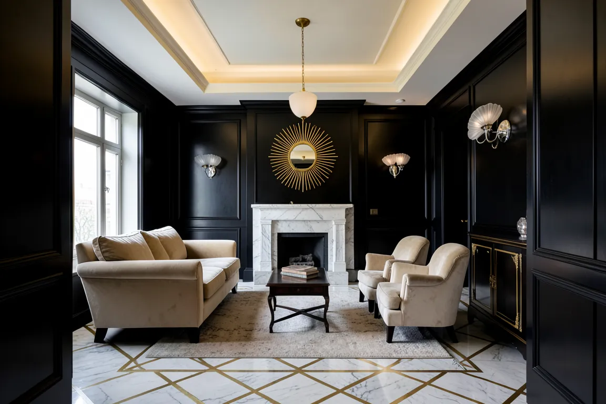

interior · 1925–1940 · also: Art Deco interior, Style moderne, Paris 1925
The luxury room of the machine age. Symmetric plans, stepped and fan geometry, black lacquer, exotic veneers and polished chrome or brass give high contrast; a mirror or a mural on the axis and cove light in the ceiling make the room a stage.

Core thesis
Luxury and the machine meet in one bold geometric order of rare materials and high contrast.
Design principles
Compose the room on a strong central axis with a focal mirror, mural or fireplace at its end.
Use stepped, zigzag, sunburst and fan forms in mouldings, furniture and metalwork.
Pair a dark ground with light accents at high contrast: black lacquer with ivory, chrome or gold.
Use rare veneers, shagreen, lacquer and inlay on large, simple furniture shapes.
Hide the light in ceiling coves and behind frosted glass panels.
Repeat one geometric motif at three scales: the floor, the furniture and the hardware.